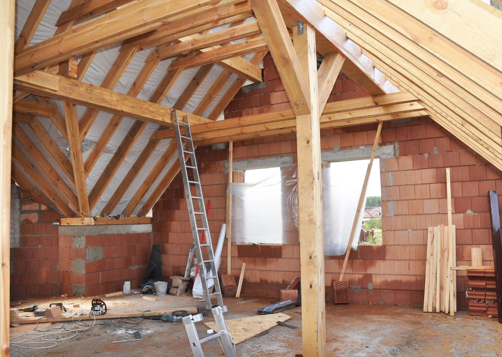
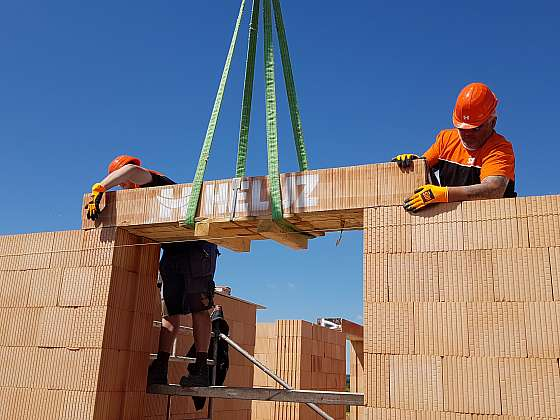

ABCDEF STAV s.r.o.
O nás
Poskytujeme komplexní služby ve stavebnictví od návrhu po realizaci. Používáme kvalitní materiály a nabízíme individuální přístup ke každému projektu.
- Komplexní služby: od návrhu po realizaci
- Kvalitní materiály: Používáme pouze prověřené materiály od renomovaných výrobců
- Firma má certifikát společnosti Caparol Czechia s.r.o.
- Individuální přístup: Každý projekt je pro nás jedinečný
- Záruka kvality: Na veškeré naše práce poskytujeme záruku
- Zpracujeme projekt na získání dotací – energie z obnovitelných zdrojů
Naše služby
- Stavby na klíč
- Příprava pro stavbu
- Hrubá stavba, zdivo, jádra, omítky, podlahové topení
- Sanace zdiva – odstranění vlhkosti, solí a dalších poškození
- Opravy krovů a střech – výměna střešních krytin, krovů
- Rekonstrukce bytů, interiérů – elektroinstalace, rozvody, sádrokartonové příčky
- Pokládky zámkové dlažby
- Rekonstrukce fasád historických budov
- Vodohospodářské stavby – oprava zdí vodních toků, obnova rybníků
Reference
Máme za sebou mnoho úspěšných realizací, například:
- Mateřská škola XYZ - Varnsdorf
- Rekonstrukce staré celnice na hotel
- Rekonstrukce učeben a toalet ZŠ, Varnsdorf
- Rekonstrukce historické fasády RD, Varnsdorf
- Oprava oplocení ZŠ


Kontakt
Email: info@abcdefstav.cz
Telefon: +420 123 456 789
Web: www.abcdefstav.cz
Facebook: ABCDEF STAV
Instagram: @abcdefstav
Bankovní spojení: CZ00 1234 5678 9012 3456 7890